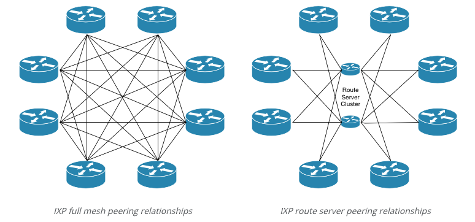
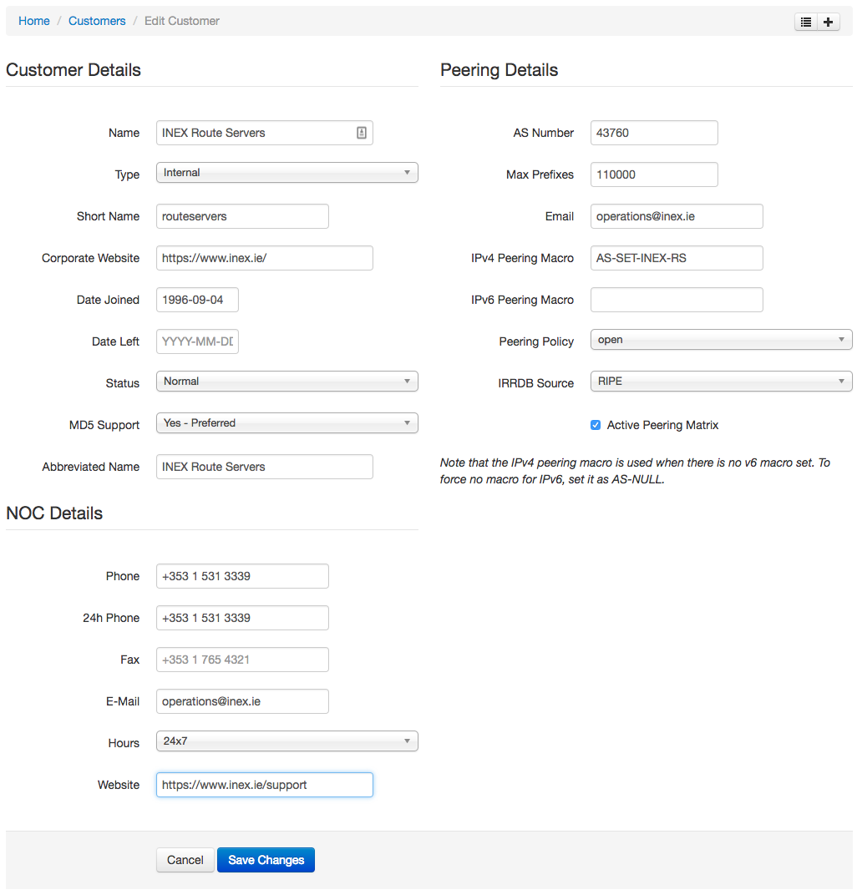
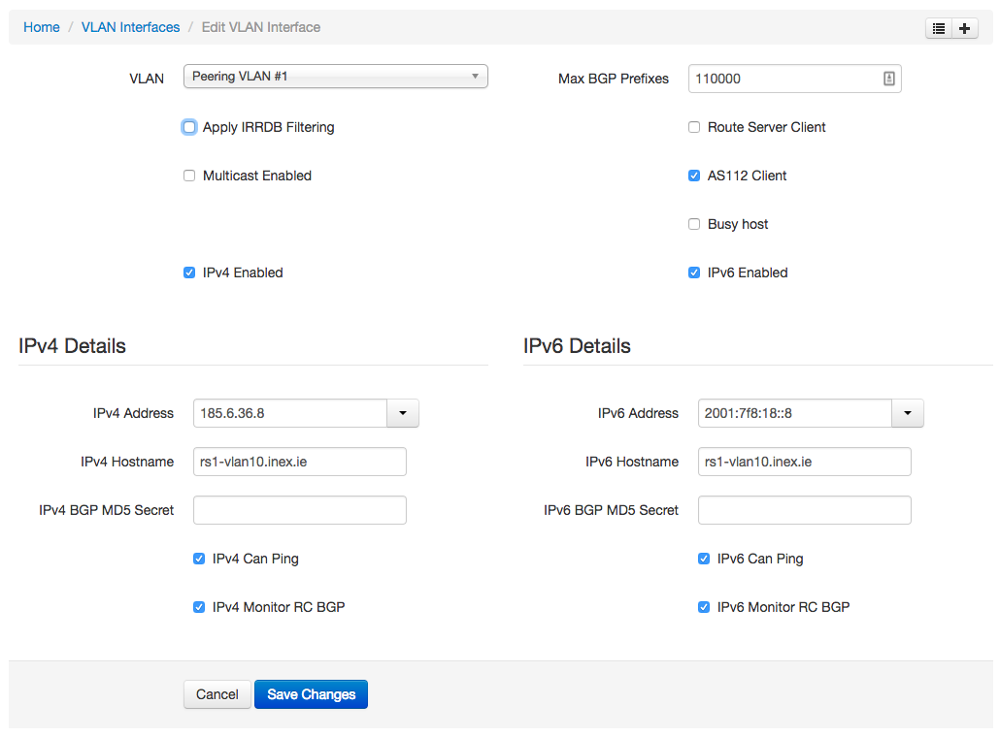
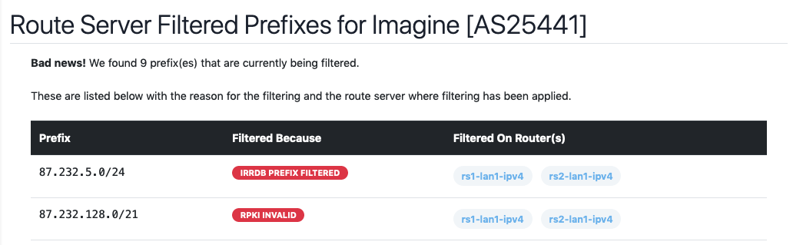

Route Servers
Prerequisite Reading: Ensure you first familiarize yourself with the generic documentation on managing and generating router configurations here.
Normally on a peering exchange, all connected parties will establish bilateral peering relationships with each other customer connected to the exchange. As the number of connected parties increases, it becomes increasingly more difficult to manage peering relationships with customers of the exchange. A typical peering exchange full-mesh eBGP configuration might look something similar to the diagram on the left hand side.

The full-mesh BGP session relationship scenario requires that each BGP speaker configure and manage BGP sessions to every other BGP speaker on the exchange. In this example, a full-mesh setup requires 7 BGP sessions per member router, and this increases every time a new member connects to the exchange.
However, by using a route servers for peering relationships, the number of BGP sessions per router stays at two: one for each route server (assuming a resilient set up). Clearly this is a more sustainable way of maintaining IXP peering relationships with a large number of participants.
Configuration Generation Features
Please review the generic router documentation to learn how to automatically generate route server configurations. This section goes into a bit more specific detail on INEX's route server configuration (as shipped with IXP Manager) and why it's safe to use.
You should also look at the following resources:
- watch the IXP Manager Update & Route Server Configuration presentation from the 32nd Euro-IX Forum held in Galway, Ireland, April 2018: [pdf] [video].
- to fully understand RPKI with IXP Manager, watch our presentation from APRICOT 2019.
- read this article on INEX's website.
The features of the route server configurations that IXP Manager generates include:
- RPKI support when using the Bird v2 templates;
- full prefix filtering based on IRRDB entries (can be disabled on a per member basis if required) - see the IRRDB documentation here;
- full origin ASN filtering based on IRRDB entries (can be disabled on a per member basis if required);
- in all cases, prefix filtering for IPv4 and v6 based on the IANA special purpose registries (also known as bogon lists);
- ensuring next hop is the neighbor address to ensure no next hop hijacking;
- max prefix limits;
- multiple VLAN interfaces for a single member supported;
- large BGP communities supported;
- rfc1997 passthru / interpretation switch (>= v5.2.0);
- nearly 15 years of production use and experience.
With Bird v2 support in IXP Manager v5, we provide better looking glass integration and other tooling to show members which prefixes are filtered and why. The Bird v2 filtering mechanism is as follows:
- Filter small prefixes (default is > /24 / /48 for ipv4 / ipv6).
- Filter martians / bogons prefixes (see this template).
- Sanity check - filter prefixes with no AS path or > 64 ASNs in AS path.
- Sanity check to ensure peer AS is the same as first AS in the prefix’s AS path.
- Prevent next-hop hijacking. This occurs when a participant advertises a prefix with a next hop IP other than their own. An exception exists to allow participants with multiple connections advertise their other router (next-hop within the same AS).
- Filter known transit networks - see FIXME
- IRRDB filtering: ensure origin AS is in set of ASNs from member AS-SET.
- RPKI:
- Valid -> accept
- Invalid -> drop
- RPKI Unknown -> revert to standard IRRDB prefix filtering.
Setting Up
You first need to add your route servers to the IXP Manager routers database. See this page on how to do that.
Typically an IXP's route server service will have a dedicated ASN that is different to the IXP's own management / route collector ASN. As such, you need to add a new internal customer to IXP Manager.
You are strongly advised to use / request a 16-bit ASN from your RIR for route server use. If you do not, you will be unable to offer your members standard community based filtering.
Here's an example from INEX for our route server #1:

You then need to create an interface for this route server on each peering LAN where the service will be offered. Here again is INEX's example from our peering LAN1 in Dublin:

There's a couple things to note in the above:
- AS112 Client is checked which means (so long as Route Server Client is checked on the AS112 service) the AS112 service will peer with the route servers.
- Apply IRRDB Filtering has no meaning here as this is the route server rather than the route server client.
Per ASN Import / Export Filters
There are occasions where you may need to override the default filtering mechanism for some members. IXP Manager allows you to create custom Bird2 checks at the start of the standard import / export filters when using Bird2 (not supported on the older Bird v1 configuration).
To do this, you must create skinned files named after the ASN. For example, let's assume your skin name is example and the ASN of the member you want to apply custom filtering to is 64511; then you would an export and/or import filter in files named:
$IXPROOT/resources/skins/example/api/v4/router/server/bird2/f_import_as64511.foil.php$IXPROOT/resources/skins/example/api/v4/router/server/bird2/f_export_as64511.foil.php
You'll see real examples from INEX here. Remember that these are placed at the beginning of the standard filters allowing you to explicitly accept or reject the prefix. However, remember that INEX accepts prefixes on import always but tags prefixes for filtering with large community routerasn:1101:x - please see the resources referenced above for details on this.
Displaying Filtered Prefixes
Using Bird v2 and internal large communities, we have completely overhauled how we show end users what prefixes are filtered by the route servers.
If you are running route servers using the Bird v2 configuration and if you have installed the looking glass then you should set the following in your .env file:
IXP_FE_FRONTEND_DISABLED_FILTERED_PREFIXES=false
This is a live view gathered from each Bird v2 route server with a looking glass.
Please see our presentations from 2019 for more information on this. Particularly the UKNOF one from September 2019 would be the most up to date.
For a route server to be polled for a customer by this tool, the following conditions must be met:
- the customer must be a route server client and the vlan cannot be a private vlan;
- only enabled IP protocols are queried for a vlan interface;
- the router server must be allocated to the same vlan and have a instance for the IP protocol;
- the route server cannot be marked as quarantine;
- the route server muct have an API configured;
- the route server must be a route server (remember you can provision collectors and AS112 routers via IXP Manager also);
- the route server must have large communities enabled;
It is also critical that the looking glass for the route server works.
Caching: for large members with tens of thousands of routes, gathering filtered prefixes can be an expensive task for IXP Manager and the route server (expensive in terms of time and CPU cycles). As such, this feature of IXP Manager requires the use of a persistent cache. We recommend memcached for this which is installed and enabled by default with the automated installer.
Well-Known Filtering Communities
The route server configuration that IXP Manager generates by default provides well known communities to allow members to control the distribution of their prefixes.
NB: in the following, rs-asn is the AS number of the IXP's route server.
The standard communities are defined as follows:
| Description | Community |
|---|---|
| Prevent announcement of a prefix to a peer | 0:peer-as |
| Announce a route to a certain peer | rs-asn:peer-as |
| Prevent announcement of a prefix to all peers | 0:rs-asn |
| Announce a route to all peers | rs-asn:rs-asn |
The community for announcing a route to all peers (rs-asn:rs-asn) is the default behaviour and so there is no need to tag routes with this.
Example #1: if a member wishes to to instruct the IXP route server (with AS64500) to distribute a particular prefix only to AS64496 and AS64503, the prefix should be tagged with communities: 0:64500 64500:64496 64500:64503 (i.e. announce to no one except...).
Example #2: for a member to to announce a prefix to all IXP route server participants, excluding AS64497, the prefix should be tagged with only community 0:64497.
If you enabled support for BGP large communities, then the following large communities can be used:
| Description | Community |
|---|---|
| Prevent announcement of a prefix to a peer | rs-asn:0:peer-as |
| Announce a route to a certain peer | rs-asn:1:peer-as |
| Prevent announcement of a prefix to all peers | rs-asn:0:0 |
| Announce a route to all peers | rs-asn:1:0 |
If your route server is configured to support large communities, then you should advise your members to use these over standard 16-bit communities as a large number of networks now have a 32-bit ASN. You should also advise them not to mix standard 16-bit communities and large communities – please choose one or the other.
Lastly, with BGP large communities, AS path prepending control is also available by default using the following large BGP communities:
| Description | Community |
|---|---|
| Prepend to peer AS once | rs-asn:101:peer-as |
| Prepend to peer AS twice | rs-asn:102:peer-as |
| Prepend to peer AS three times | rs-asn:103:peer-as |
RFC1997 Passthru
RFC1997 defines some well-known communities including NO_EXPORT (0xFFFFFF01 / 65535:65281) and NO_ADVERTISE and states that they have global significance and their operations shall be implemented in any community-attribute-aware BGP speaker.
According to RFC7947, it is a matter of local policy whether these well-known communities are interpreted or passed through. Historically, some IXP route servers interpret them and some pass them through. As such the behaviour of these well-known communities is not well-understood when it comes to route servers and this topic has been the subject of a good deal of debate in the IXP community over the years.
In 2017, INEX and LONAP published draft-hilliard-grow-no-export-via-rs-00 to try and create some consensus on this. While the draft was not accepted as a standard, the discussion drew a conclusion that these well-known communities should not be interpreted by the route server but passed through.
Legacy Prefix Analysis Tool
The older but deprecated means of viewing filtered prefixes was the Route Server Prefix Analysis tool which allows your members to examine what routes they are advertising to the route servers, which are being accepted and which are being rejected.
Limitations and Caveats
Implemented as a Perl script which accesses the database directly. The script can also only be used on one LAN and one route server. Thus, pick you most popular LAN and route server.
Setting Up
- Download this script to your route server;
- Ensure you install and configure the IXP Manager Perl library on this route server also;
- Edit the
compare-route-server-prefixes.plscript and set the Bird configuration file and socket (you can find the position in the file by searching forXXX-SET-ME); - See also this diff for further hints;
- Execute the
compare-route-server-prefixes.plscript a few times a day as you think appropriate; - In your
.envfile, ensure the following is set:
IXP_FE_FRONTEND_DISABLED_RS_PREFIXES=falseOnce you make the last change above, the prefix analysis tool will be available to administrators and members on IXP Manager.